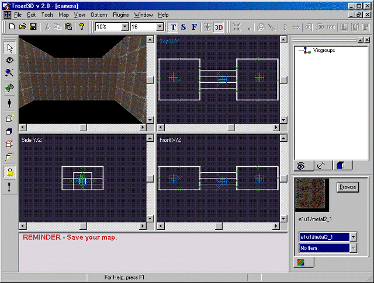
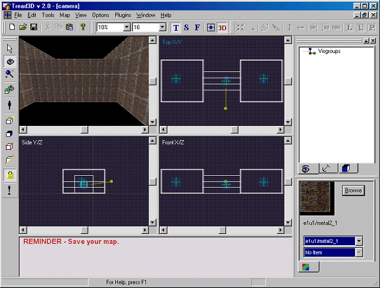
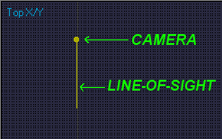
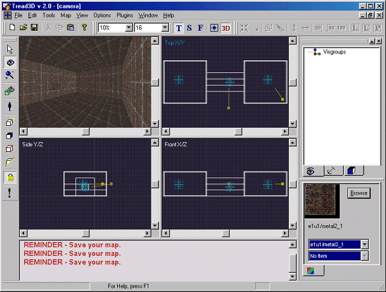
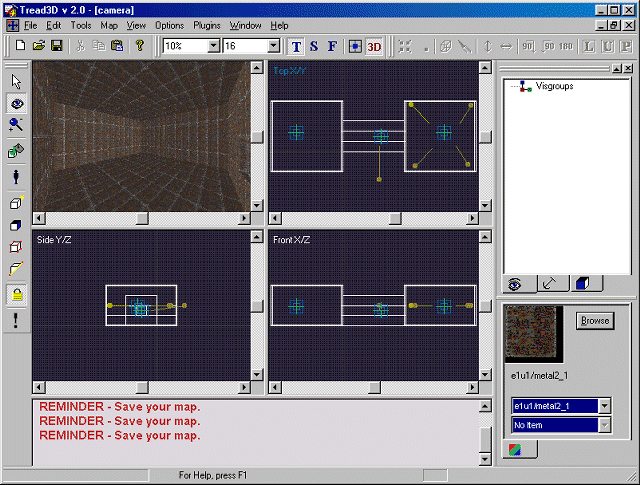

This is a walk-through as how to manipulate the Camera.
Before starting this tutorial you should first get acquainted with the basics of the "Tread3D" editor; the screen and the various commands that are available.
As in the previous tutorials start "Tread3D".
Now load or build the largest map you can think of.
For this example we have reused the map from the Anchors tutorial.
Your screen may look like the one below.

Now lets click on the "Camera" button.
The "Camera" button is shown below.

Your screen may look like the one below.

Now you will see a line with a ball at the end.
The ball represents the Camera while the line represents the line of sight.
The "Camera" icon is shown below.

The camera can be moved by pointing on the ball with the mouse then click and then dragging it.
Also, the camera can be moved by pointing on the end of the line with the mouse then click and then dragging it.
Now instead of moving the Camera in sections lets move it in one piece.
You can first click-hold on the Camera with the mouse then hold down the "Shift" and drag it around.
Now lets move to a remote section of the map.
Moving there was easy but moving the Camera will not be.
Why move the Camera when we can place another one where we want it.
Pick an area for the new Camera.
First click on the Camera button.
Now just hold down the "Ctrl" key and click where you want the new Camera.
(You may have to adjust the camera - point it in the right direction)
Your screen may look like the one below.

Now lets place several Cameras all around this area.
Your screen may look like the one below.

Now to activate an individual Camera.
Just click on the desired Camera (To activate it).
(In some cases you may have to click on the 3D Window after you "Activate" a Camera)
Now some important notes:
A Camera can be manipulated in all three views.
The Camera can be moved in sections or in one piece.
(Just click-hold on the Camera with the mouse then hold down the "Shift" key while you drag it around)
Multiple Cameras can be placed in a map.
(Just hold down the "Ctrl" key and click where you want a Camera)
To activate a placed Camera just click on it.
Thats all there is to it.
What you have done is "Manipulated the Camera".
Now resave your work.